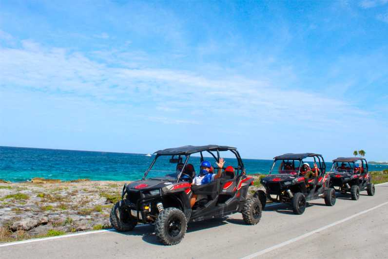
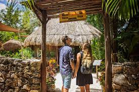
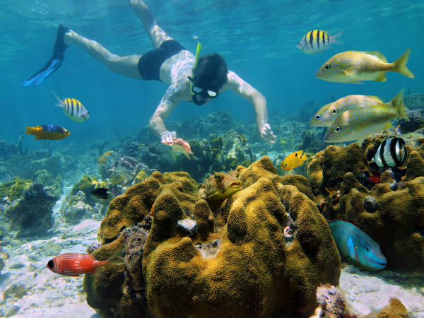
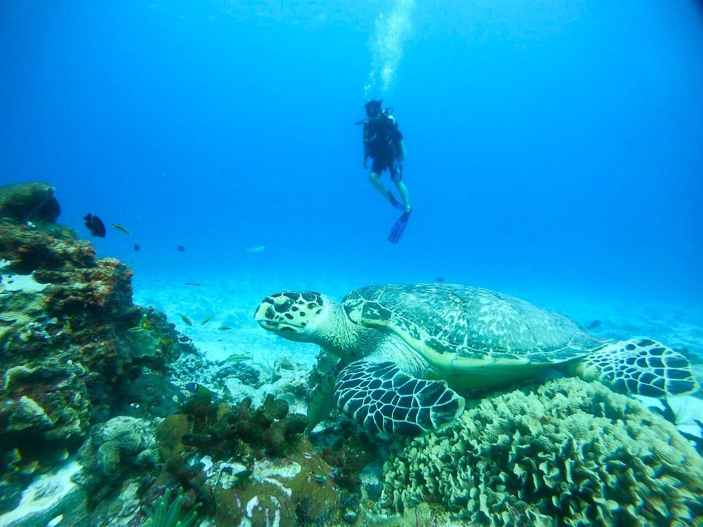

the time is now!
Are you looking for how to move on your next trip to this wonderful island?
Do not worry,
We help you!
Come and know everything you need to enjoy it to the fullest!
Weather Information
Currently:
High:
Wind speed:
Humidity:
5 Day Forecast
Tour to Mayan Cacao Company


The Mayan Cacao Company is a place to discover the origins of chocolate in the same land of its creators: The Mayans. Much more than a museum, it is an interactive site where you will explore the history of the world's most popular food. Behind The Mayan Cacao Company is one of the largest tourism agencies in Mexico: Aviomar Adventours, a company with more than 50 years of experience committed to the highest quality standards in services, guaranteeing you an unforgettable experience.
Arrecife Palancar


Also known as "The Great Mayan Reef". The island of Cozumel is mostly surrounded by coral reefs, however the area of the park is located in the southern half of the island, south of the international docks, and surrounding the west, south and a portion of the coast. from the east coast. It constitutes a natural resource of great importance for the regional economy, since recreational, conservation, exploitation, education, dissemination and monitoring activities are carried out there.
El Cedral
El Cedral de Cozumel is one of the places you should not miss, as it is a small town that has gone through different eras such as: The era of the Mayans and the Spanish. This construction is the oldest in Cozumel.
It has a fair that has made it famous and that takes place at the end of April each year, in which bullfights, cockfights, rodeos, typical food, folkloric dances of the region, mechanical games, horseback riding, among many other things.